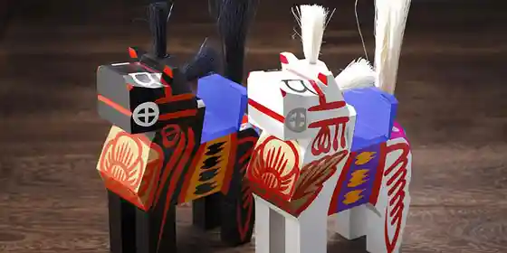
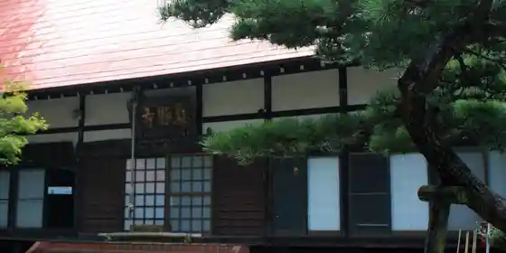
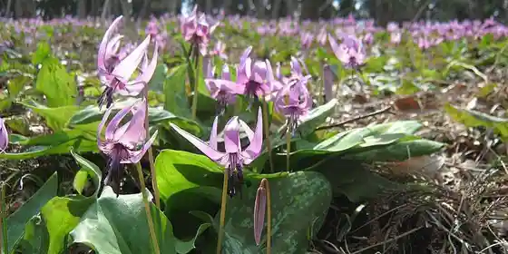

Joraku In Sakura
Miharu, Fukushima · 0247-62-3690 · Official / source link
Serigasawa Sakura
Miharu, Fukushima · 0247-62-3690 · Official / source link
Nanakusa Ki no Tenjin Sakura
Miharu, Fukushima · 0247-62-3690 · Official / source link
Hachiju Nai Kamon Sakura
Miharu, Fukushima · 0247-62-3690 · Official / source link
O Shiro Saka Shidarezakura
Miharu, Fukushima · 0247-62-3690 · Official / source link
Miharu Hariko
Miharu, Fukushima · 0247-62-3960 · Official / source link
Miharu Koma
Miharu, Fukushima · 0247-62-3960 · Official / source link

Makoto Sho Tera
Miharu, Fukushima · 0247-62-3690 · Official / source link

Katakuri Village
Miharu, Fukushima · 0247-62-3690 · Official / source link

Miharu Shuzo (Kyu Sato Shuzo)
Miharu, Fukushima · 0247-62-2816 · Official / source link
Kozen Tera
Miharu, Fukushima · 0247-62-3778 · Official / source link
Hokke Tera
Miharu, Fukushima · 0247-62-3436 · Official / source link
Shu Den Tera
Miharu, Fukushima · 0247-62-5263 · Official / source link
Amasawa Tera
Miharu, Fukushima · 0247-62-3304 · Official / source link
Munakata Farm
Miharu, Fukushima · 024-944-7026 · Official / source link
Kaoru Buruberii Sono
Miharu, Fukushima · 0247-62-4956 · Official / source link
Eki.com
Miharu, Fukushima · 0247-62-8080 · Official / source link
Sawa City
Miharu, Fukushima · 0247-62-7428 · Official / source link
Iwa Shu City
Miharu, Fukushima · 0247-62-2256 · Official / source link
Miharu Dam
Miharu, Fukushima · 0247-62-3145 · Official / source link
Miharu Folk History Museum
Miharu, Fukushima · 0247-62-5263 · Official / source link
Miharu Kyodo Ningyokan
Miharu, Fukushima · 0247-62-7053 · Official / source link
Miharu Dam Museum
Miharu, Fukushima · 0247-62-3145 · Official / source link
Miharu Village Den'en Seikatsu Kan
Miharu, Fukushima · 0247-62-8010 · Official / source link
Mukaiyama Forest Park
Miharu, Fukushima · 0247-62-3960 · Official / source link
Sakura no Park
Miharu, Fukushima · 0247-62-3690 · Official / source link
Banto Plaza
Miharu, Fukushima · 0247-62-8080 · Official / source link
Ryu On In
Miharu, Fukushima · 0247-62-3603 · Official / source link
Hozo Tera
Miharu, Fukushima · 0247-62-2637 · Official / source link
Fukuju Tera
Miharu, Fukushima · 0247-62-2569 · Official / source link
Mezu Kannon Do
Miharu, Fukushima · 0247-62-2082 · Official / source link
Dojo Town Tori (Shokunin Alley)
Miharu, Fukushima · 0247-62-3960 · Official / source link
Ta Village Omoto Shrine
Miharu, Fukushima · 0247-62-3960 · Official / source link
Akita Shi Rekidai no Haka
Miharu, Fukushima · 0247-62-3960 · Official / source link
Miharu Han Ko Tokoro Omotemon
Miharu, Fukushima · 0247-62-3960 · Official / source link
Miharu Takizakura
Miharu, Fukushima · 0247-62-3690 · Official / source link
Miharu Dai Shrine
Miharu, Fukushima · 0247 · Official / source link
Miharu Castle Ruins (Maizuru Shiro)
Miharu, Fukushima · 0247-62-3960 · Official / source link
Taka Inui In
Miharu, Fukushima · 0247-62-3960 · Official / source link
Hikari Iwa Tera
Miharu, Fukushima · 0247-62-3960 · Official / source link
Shiunji
Miharu, Fukushima · 0247-62-3960 · Official / source link